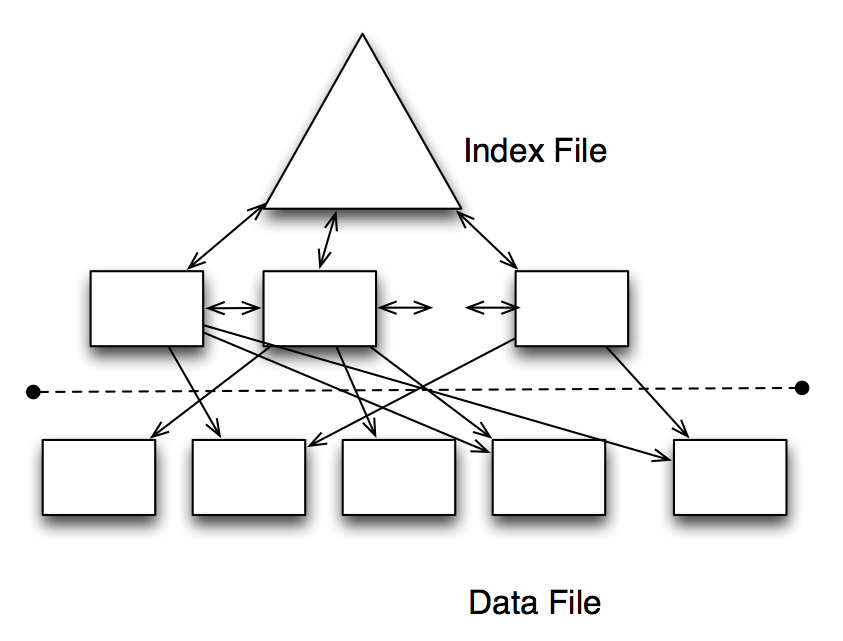
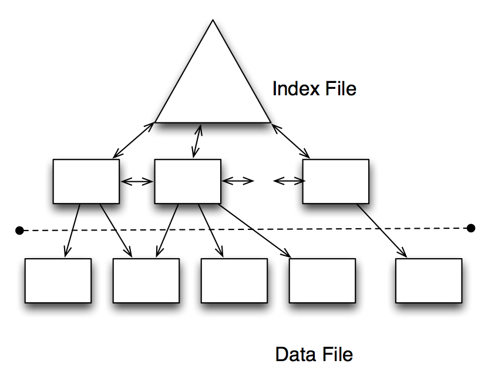
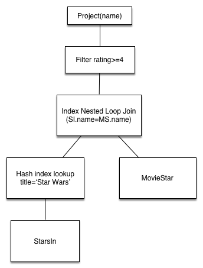

COSC 4820 Database Systems
Indexes and Introduction to Query Optimization
Ruben Gamboa
Professor
Indexes in SQL
- An index is a data structure that makes it more efficient to retrieve tuples that have a given value
for a given attribute
- For example, an index on the Student ID attribute would make it efficient to find a student with W# "W123456789"
- Or an index on phone number would make it efficient to find a student or students with phone number "307-234-5678"
Indexes in SQL
- In memory, you would solve this problem by using a data structure such as
- a sorted array
- a (binary) search tree
- a hash table
Actually, all of these are used in databases
- A sorted file
- A B-tree with as many children as fit in a disk page
- A hash table, with "buckets" mapping to different disk pages
Note: Sorted files and B-trees can handle comparisons with <, <=, >, >=, and =
But hash tables can only handle equality checks
And (rule of thumb) they are more efficient than the others
Motivation for indexes
- Suppose we need to compute \(S \bowtie S\), where \(S\) is the Students table at UW
- Since \(|S| \approx 14000\), the naive method takes up \(14000^2 =\) 1.96 × 108 steps
- Each step is a disk access, so even if disk I/O is 1ms, that works out to 1.96 × 105 seconds
- Which is 3266.6666667 minutes
- Which is 54.4444444 hours
- Which is 2.2685185 days
- That's a little unfair
Instead of reading each tuple at a time, we can read many tuples at the same time, since they are on the same disk page
Disk I/Os is what matters, so we'll stop worrying about seconds
After all, disks get faster!
Motivation for indexes
- Suppose we need to compute \(S \bowtie S\), where \(S\) is the Students table at UW
- Suppose each disk page can handle 100 students
Since \(|S| \approx 14000\) or 140 pages, the Block Nested Loop join method takes up \(140+140^2 =\) 1.974 × 104 disk I/Os
That's a lot better, but it's still quadratic!
A good index will bring that up to 3.514 × 104 disk I/Os
But it's linear
You'd see an improvement in a larger school
E.g., with 100,000 students, it becomes
- Without an index: \(1000^2 =\) 106 disk I/Os
- With an index: 2.51 × 105 disk I/Os
Motivation for indexes
- The "hard" numbers in the previous slides involve joins
Here's a similar argument with selections
Suppose we need to compute \(\sigma(S)\), where \(S\) is the Students table at UW
Suppose each disk page can handle 100 students
Since \(|S| \approx 14000\) or 140 pages, without an index, we can execute the selection with \(140\) disk I/Os
- A good (and applicable) index will bring that down to 2.5 disk I/Os!
- Actually, it could be a few more, depending on the selectivity of the index (more on this later)
- If we're looking for a single record, then 2.5 disk I/Os is about right
- If we're looking for all students in COSC, it may take \(300\) disk I/Os!
Motivation for indexes
- Indexes can be used to speed up queries that involve selections, e.g.,
SELECT title, year
FROM Movies
WHERE year = 2000
- They can also be used to speed up queries involving joins
SELECT title, year, name
FROM Movies JOIN MovieExecs ON producerC# = cert#
WHERE year = 2000
- And indexes can speed up checking of integrity constraints, e.g., W# must be unique
Declaring Indexes
- Making an index is as easy as calling
CREATE INDEX
CREATE INDEX MovieYearIdx ON Movies(year)
- You would not have to make an index on cert#, because databases automatically create an index on the PRIMARY KEY
Multidimensional Indexes
- You can create an index that spans more than one attribute
CREATE INDEX StudentNameIdx ON Students(first_name, last_name)
- The order of the attributes matters!
- If you know the first_name, but not the last_name, you may still be ab;e to use the index above effectively
- But if you know the last_name and not the first_name, this index is useless
- Note that if the index is a hash index, then knowing one or the other does not help!
- This only helps for indexes that have a sort order, e.g., sorted files or tree indexes
Dropping Indexes
- No surprises here:
DROP INDEX MovieYearIdx
What Indexes to Pick?
What Indexes to Pick?
- The choices you make when picking indexes will likely determine whether the database performance is acceptable or not
- One approach is to create all possible indexes! (Why not?)
- If you have a table with 10 attributes, that's 1023 indexes
- If you have a table with 20 attributes, that's 1.048575 × 106 indexes
- OK, that may be too much
- How about an index on each column?
- 10 attributes means 10 indexes, 20 attributes means 20 indexes
- This is manageable, but consider that each update to the database needs to update each of the indexes!
Basic Tradeoffs
- Indexes may speed up queries with selections and joins
- Indexes may slow down insertions, deletions, and updates
- These are just guidelines!
- An index may slow down a query, e.g, adding an index on "gender" may confuse the optimizer
- An index may speed up an insertion, e.g., by making a constraint check faster
- We'll now discuss some indexes that are usually good ideas
Primary Key Indexes
- It is usually a good idea to have an index on a primary key
- Queries typically join on primary keys, so the index will be used a lot
- The index returns at most one tuple, so at most one page will need to be read
- Suppose we need to compute \(S \bowtie S\), where \(S\) is the Students table at UW
- Suppose each disk page can handle 100 students
- Since \(|S| \approx 14000\) or 140 pages, the Index Nested Loop join method takes up
- \(140\) disk I/Os to read the entire table
- for each tuple, at most one more disk I/O to find the matching tuple
- The grand total is \(140 + 14000 \times 1 =\) 1.414 × 104 disk I/Os
Primary Key Indexes
- Actually, the analysis is slightly wrong
- We counted the disk I/Os to read the tuples, but we never counted the disk I/Os for the index itself
- Rule of thumb: Each lookup on a tree-based index costs 3 disk I/Os (but it would be probably be just 2 on 14,000 rows)
- Rule of thumb: Each lookup on a hash-based index costs 1.5 disk I/Os
- Using these rough estimates, we find
- Using a tree index: \(140 + 14000 \times (1 + 3) =\) 5.614 × 104 disk I/Os
- Using a hash index: \(140 + 14000 \times (1 + 1.5) =\) 3.514 × 104 disk I/Os
Primary Key Indexes
- These indexes are such a good idea that databases routinely build them for us!
- So you should not to build your own primary key indexes, ever
- If you use synthetic keys, then the comparison \(K_1 < K_2\) is probably not meaningful
- I.e., all lookups will be based on equality (\(K1 = \dots\))
- That means you should be using hash indexes on synthetic primary keys
- Hint: The default is usually a tree index
Clustered Indexes
- An index is clustered if all the entries for a given value are on one (or just a very few) pages
- Extreme case: If there's only one matching tuple, then of course it's on only one disk page
- Another case: If the data is sorted on the index attributes, then it's clustered
Clustered Indexes

An Unclustered Index
An Unclustered Index
Clustered Indexes

A Clustered Index
A Clustered Index
Clustered Indexes
SELECT title, year
FROM Movies
WHERE year = 2000
- If the index is clustered, an index on year is very likely to be efficient
- How likely depends on how selective year is in this table
- I.e., if there are only movies from the year 2000, then the index is useless (selectivity 100%)
- But if there are movies from all years from 1980-2010, then the index is good (selectivity \(\approx\) 3%)
Clustered Indexes
SELECT title, year
FROM Movies
WHERE year = 2000
- If the index is unclustered, an index on year may be worse than useless
- Even if there is data from 1980-2010, we still have to read each tuple separately
- That means we need \(0.03 \times N\) disk I/Os
- If a block holds more than 33 records, we would be better off ignoring the index!
Picking Indexes
- It's hard to pick indexes in a vacuum
- What you really need is a list of queries that are important to your application(s)
- Also, these queries should be weighted, since some queries may be more important or frequent than others
- With this information, you can compare the cost of implementing different indexes
Example
- Q1, with probability \(.6\)
SELECT movieTitle, movieYear
FROM StarsIn
WHERE starName = ?
- Q2, with probability \(.3\)
SELECT starName
FROM StarsIn
WHERE movieTitle = ? AND movieYear = ?
- Q3, with probability \(.1\)
INSERT INTO StarsIn VALUES(?,?,?)
Example (Assumptions)
- StarsIn takes up 10 pages
- Typically, a star appears in 3 movies and each movie has 3 stars
- The 3 movies a star is in will be in different pages of StarsIn, so it will take 3 disk I/Os to fetch these 3 movies, even with an index
- 1.5 disk accesses are required to read the index for an equality lookup
- For inserts, we need 1 disk I/O to read the original page, 1 disk I/O to write the modified page, and 2.5 disk I/Os to update the index (1.5 read, 1 write) -- for a total of 4.5 disk I/Os
Example
| Query | No Index | starName Index | movieTitle Index | Both Indexes |
|---|---|---|---|---|
| Q1 | 10 | 4.5 | 10 | 4.5 |
| Q2 | 10 | 10 | 4.5 | 4.5 |
| Q3 | 2 | 4.5 | 4.5 | 7 |
| Total | 9.2 | 6.15 | 7.8 | 4.75 |
- Q1, with probability \(.6\)
SELECT movieTitle, movieYear
FROM StarsIn
WHERE starName = ?
- Q2, with probability \(.3\)
SELECT starName
FROM StarsIn
WHERE movieTitle = ? AND movieYear = ?
- Q3, with probability \(.1\)
INSERT INTO StarsIn VALUES(?,?,?)
Example
| Query | No Index | starName Index | movieTitle Index | Both Indexes |
|---|---|---|---|---|
| Q1 | 10 | 4.5 | 10 | 4.5 |
| Q2 | 10 | 10 | 4.5 | 4.5 |
| Q3 | 2 | 4.5 | 4.5 | 7 |
| Total | 6 | 5.6 | 6.15 | 5.75 |
- Q1, with probability \(.3\)
SELECT movieTitle, movieYear
FROM StarsIn
WHERE starName = ?
- Q2, with probability \(.2\)
SELECT starName
FROM StarsIn
WHERE movieTitle = ? AND movieYear = ?
- Q3, with probability \(.5\)
INSERT INTO StarsIn VALUES(?,?,?)
Picking Indexes Globally
- We only considered two indexes
- But what if we had dozens of tables with dozens of attributes?
- This is where automated tools come in
- A typical approach is to choose indexes greedily
- First, fix a workload of queries
- Consider the cost of executing these queries with no index
- Now consider the cost of executing these queries with one (out of many possible) indexes
- Pick the index that works best
- Keep adding one index at a time, until it stops helping
The Query Optimizer: Cost Estimation
Approach to Selections
- Find the most selective access path
- Selective: retrieve fewest number of tuples up front (using an index)
- Apply any remaining conditions to the tuples returned
- In other words, pick most selective index, and filter remaining tuples
- Yeah, that's the big reveal
- Now, onto the details
Approach to Selections
- What is the most selective access path?
- Answer: An index or file scan that (we estimate) will require the fewest page I/O operations
- The remaining terms on the condition are applied to the tuples read with the most selective access path
- But the remaining terms do not affect the #tuples or #pages fetched
- So the cost of the other terms is zero (since we only count I/O)
Example
- Consider this condition:
date < 5/1/19 AND voter_id=5 AND precinct_id=3 Here are two different query plans:
- Use a B+ tree on the date field, then filter the remaining tuples using the condition voter_id=5 AND precinct_id=3
- Use a hash index on voter_id and precint_id and then check each tuple to see if it matches day<5/1/19
- Main Question: Which is better? How do we even think about answering this question?
Implementing Selections
- Cost of using an index for selection depends on
- #matching tuples
- clustering
- Cost of finding matching tuples is usually small
- Cost of retrieving matching tuples is
- small for clustered index
- large for unclustered index (linear in #matches)
- totally impractical for unclustered index when many tuples match
Cost Example
SELECT *
FROM MovieStars
WHERE name < 'C'
- "Benign" assumptions:
- Uniform distribution of names
- I.e., about 10% (2/26) of tuples qualify
- 40,000 tuples in 500 pages (80 per page)
- Note: Catalog knows min and max of names, so it can compute the percentage using the uniformity assumption
- Note: But if uniformity assumption isn't realistic, keep histograms instead!
Cost Example
SELECT *
FROM MovieStars
WHERE name < 'C'
- I.e., about 10% (2/26) of tuples qualify
- 40,000 tuples in 500 pages (80 per page)
- Cost estimates:
- Clustered index: a little more than 50 I/Os (e.g., 3+50)
- Unclustered index: a little more than 4,000 I/Os (e.g., 3+4,000)
Implementing Joins: Nested Loop Joins
\[R(x,y) \bowtie S(y,z)\]
foreach tuple r in R do:
foreach tuple s in S where r.y=s.y do:
add <r,s> to result
- If there is an index on the join column of one relation (i.e., on column y of relation S), make it the inner relation to exploit the index:
- Cost: #Pages(R) + #Tuples(R)*(IndexLookup(S)+Lookup(S))
- Cost assumptions:
- R: 100,000 tuples in 100 pages (1,000 per page)
- S: 40,000 tuples in 500 pages (80 per page)
- index cost is 1.2 (hash) or 2-3 (tree)
- read matching tuple of S is 1
Implementing Joins: Nested Loop Joins
\[R(x,y) \bowtie S(y,z)\]
foreach tuple r in R do:
foreach tuple s in S where r.y=s.y do:
add <r,s> to result
- Hash index, column y of table S
- Scan R: 1,000 pages
- For each (100,000) R tuple:
- 1.2 to read from the hash index on S.y (on average)
- 1 to get corresponding tuple from S
- Total cost: 221,000
Implementing Joins: Nested Loop Joins
\[R(x,y) \bowtie S(y,z)\]
foreach tuple s in S do:
foreach tuple r in R where r.y=s.y do:
add <r,s> to result
- Hash index, column y of table R
- Scan S: 500 pages
- For each (40,000) S tuple:
- 1.2 to read from the hash index (on average)
- 2.5 movies per star on average (100,000/40,000)
- Cost to fetch movies is 1 (for clustered) or 2.5 (unclustered)
- Total cost: 88,500 (clustered) or 148,500 (unclustered)
Implementing Joins: Sort-Merge Joins
\[R(x,y) \bowtie S(y,z)\]
- Basic Idea: Sort both \(R(x,y)\) and \(S(y,z)\) on \(y\)
- Note: It's possible that \(R\) or \(S\) is already sorted on \(y\)
- Then read the sorted versions of \(R\) and \(S\) as in merge sort
- The merge implements the join
- Some \(y\) values will be in both \(R\) and \(S\), e.g., \(y_1\), \(y_2\), ..., \(y_n\)
- For each \(y_i\), let \(X_i\equiv\{x \mid \langle x, y_i \rangle \in R\}\) and \(Z_i\equiv\{z \mid \langle y_i,z \rangle \in S\}\)
- The answer is the cross product \(X_i \times \{y_i\} \times Z_i\)
- We can implement that cross product by scanning \(R\) only once, but possibly scanning each \(Z_i\) once per tuple in \(X_i\)
- Hopefully,all or most of the pages of \(Z_i\) remain in memory, so we can do a single scan of \(S\) as well
Cost of Sort-Merge Joins
Cost: Sort(R) + Sort(S) + #Pages(R) + #Pages(S)
- #Pages(R) + #Pages(S) is the likely (and best possible) cost of the merge operation
- But the merge could cost as high as #Pages(R) * #Pages(S)
- This depends entirely on the characteristics of the data
- Worst case: There is only one distinct \(y\), so \(R \bowtie S \approx R \times S\)
Cost of sorting depends on how much data we can load into memory
External sorts require a number of passes
For these tables, 2 passes should be enough
Each pass reads and writes data, so the total cost is
Cost: \(2\cdot2\cdot1,000 + 2\cdot2\cdot500 + 1,000 + 500 = 7,500\) I/O operations
Index Join or Sort-Merge Join?
| Join Type | Cost |
|---|---|
| Index Join | 221,000 I/O ops |
| Sort-Merge Join | 7,500 I/O ops |
- Easy call, right?
- Not so fast!
- Suppose the join appears in the query \(\sigma(R \bowtie S)\)
- And suppose the selection filters the movies for a specific movie star or even a few stars
- Index join could be orders of magnitude faster than sort-merge join!
- Sort-merge still has to scan all records, while index join may fetch only the necessary records
- Moral of the story: Optimization must be global
System R Optimizer
System R Optimizer
- System R project developed the first query optimizer
- It is still the most widely used approach today
- Works really well for queries with at most 10 joins
- Cost estimations:
- Statistics (in system catalog) used to estimate cost of operations and result sizes
- Cost considers a combination of CPU and I/O costs
System R Optimizer: Query Plans
Query plan space:
- It's too big
- I.e., there are too many (exponential) possible query plans, so there is not enough time to consider them all
- Solution: consider only left-deep plans
- The tree looks more like a linked list!
- This allows output of each operator to be pipelined into the next operator without storing results in temporary tables
- This depends on the cursor interface
System R Optimizer: Cost Estimator
- Optimizer must estimate cost of each plan considered
Estimate cost of each operation in query plan
- We've already discussed how to estimate the cost of operations (sequential scan, index scan, joins, etc.)
- This depends on the size of the inputs
Must also estimate size of result for each operation in tree!
- Use information about the input relations
- Make "reasonable" assumptions
- Assumption: uniformity of data
- Assumption: independence of conditions in selections and joins
Quality of optimizer is empirical: Does it find good query plans for typical queries?
Size Estimator
SELECT attributes
FROM relations
WHERE cond1 AND cond2 AND ... AND condk
- Maximum #tuples in result is the cardinality of the cross product of relations in the FROM clause
- I.e., worst case is always the cross product
- Reduction factor (RF) associated with each condition reflects the impact of the condition in reducing the result size
Cardinality of result = Max #tuples * RF1 * RF2 * ... * RFk
Assumes conditions are independent
Reduction Factors
- The secret to having good size estimators is to know the reduction factors of different types of conditions
| Condition | Reduction Factor |
|---|---|
| col = value | \(1 / NKeys(I)\), for some index \(I\) on col |
| col1 = col2 | \(1 / \max(NKeys(I_1),NKeys(I_2))\), for indexes \(I_1\) and \(I_2\) on col1 and col2 |
| col1 > value | \(\frac{High(I)-value}{High(I)-Low(I)}\), for some index \(I\) on col |
Examples: Sample Schema
StarsIn (name, title, year)
MovieStar (name, address, genre, birthdate, rating)
Similar to old schema, but with rating added to MovieStar
StarsIn
- Each tuple is 40 bytes long, 1,000 tuples per page, 1,000 pages
MovieStar
- Each tuple is 500 bytes long, 80 tuples per page, 500 pages
Motivating Example
SELECT MS.name
FROM StarsIn AS SI, MovieStars AS MS
WHERE SI.name = MS.name AND SI.title='Star Wars' AND MS.rating>=4

- Cost: 500 + 500*1,000 I/Os
- Scan MovieStars, then Scan StarsIn for each MovieStar block
- Actually not the worst plan!
- Can be improved considerably, e.g., by using indexes
- Goal is to find more efficient plan that computes the same answer
Alternative Plan #1
SELECT MS.name
FROM StarsIn AS SI, MovieStars AS MS
WHERE SI.name = MS.name AND SI.title='Star Wars' AND MS.rating>=4

- Main difference: push selects
- With 5 buffers, cost of plan:
- Scan StarsIn (1,000) + write T1 (1 page, assuming < 1,000 matches)
- Scan MovieStars (500) + write T2 (200 pages, if ratings are 1-5)
- Sort T1 (2), sort T2(2*3*200), merge (1+200)
- Total: 1,701 (selections) + 1,403 (join) = 3,104 page I/Os
Alternative Plan #1
SELECT MS.name
FROM StarsIn AS SI, MovieStars AS MS
WHERE SI.name = MS.name AND SI.title='Star Wars' AND MS.rating>=4

- Using BNL join, join cost = 1+1*200
- Total: 1,701 (selections) + 201 (join) = 1,902 page I/Os
- If we push projections, T2 has only name and title
- That lowers the #pages requires (albeit slightly)
Alternative Plan #2
SELECT MS.name
FROM StarsIn AS SI, MovieStars AS MS
WHERE SI.name = MS.name AND SI.title='Star Wars' AND MS.rating>=4

- Suppose we have a clustered index on title of StarsIn
- We get 1,000,000/40,000 = 25 StarsIn tuples for each MovieStar tuple
- INL join, Filter, and Project are all pipelined, so there's no benefit to pushing the projection in
- Pushing the selection rating >= 4 into the join would make it worse, because we can't use index on MovieStars
Alternative Plan #2
SELECT MS.name
FROM StarsIn AS SI, MovieStars AS MS
WHERE SI.name = MS.name AND SI.title='Star Wars' AND MS.rating>=4
- Cost:
- Selection of StarsIn: 2.2 I/O ops
- For each movie, must get matching MovieStar tuple (10*1.2)
- Question: How many different movies in StarsIn, and how does that translate to MovieStar?
- Total cost: 15 I/O operations
Summary
SELECT MS.name
FROM StarsIn AS SI, MovieStars AS MS
WHERE SI.name = MS.name AND SI.title='Star Wars' AND MS.rating>=4
| Method | Cost |
|---|---|
| Nested loop | 500,500 |
| Push selections | 3,104 |
| Push selections, BNL join | 1,902 |
| Push selections & projections, BNL join | ~1,700 |
| Clustered index on StarsIn | 15 |
Extended Example
- Consider this query (inspired by a previous course project):
SELECT count(distinct courses.crn), sum(courses.credits)
FROM enrolled, students, courses
WHERE enrolled.wnumber = students.wnumber
AND enrolled.crn = courses.crn
AND courses.subject = 'COSC'
- What is the best way to execute it?
Extended Example
SELECT count(distinct courses.crn), sum(courses.credits)
FROM enrolled, students, courses
WHERE enrolled.wnumber = students.wnumber
AND enrolled.crn = courses.crn
AND courses.subject = 'COSC'
- First, find all courses with subject=COSC
- Then, use that to find all the enrolled records for COSC courses
- Finally, look up the students enrolled in those courses
- That's my buest guess, but let's ask the database to EXPLAIN its plan
Extended Example
EXPLAIN
SELECT count(distinct courses.crn), sum(courses.credits)
FROM enrolled, students, courses
WHERE enrolled.wnumber = students.wnumber
AND enrolled.crn = courses.crn
AND courses.subject = 'COSC'
| id | select_type | table | type | possible_keys | key | key_len | ref | rows | Extra |
|---|---|---|---|---|---|---|---|---|---|
| 1 | SIMPLE | students | index | PRIMARY | PRIMARY | 12 | 10473 | Using index | |
| 1 | SIMPLE | enrolled | ref | PRIMARY,wnumber | wnumber | 12 | students.wnumber | 2 | Using index |
| 1 | SIMPLE | courses | eq_ref | PRIMARY | PRIMARY | 7 | enrolled.crn | 1 | Using where |
- Note that the only tables we actually read is courses and enrolled
- We only read the index for students
Extended Example
EXPLAIN
SELECT count(distinct courses.crn), sum(courses.credits)
FROM enrolled, students, courses
WHERE enrolled.wnumber = students.wnumber
AND enrolled.crn = courses.crn
AND courses.subject = 'COSC'
- Why aren't we following the "obvious" efficient plan?
- Problem: possible_keys for courses does not include subject
- So our imagined "optimal" query plan is no good
Extended Example
EXPLAIN
SELECT count(distinct courses.crn), sum(courses.credits)
FROM enrolled, students, courses
WHERE enrolled.wnumber = students.wnumber
AND enrolled.crn = courses.crn
AND courses.subject = 'COSC'
CREATE INDEX courses_subject_idx
USING HASH
ON courses (subject)
Extended Example
EXPLAIN
SELECT count(distinct courses.crn), sum(courses.credits)
FROM enrolled, students, courses
WHERE enrolled.wnumber = students.wnumber
AND enrolled.crn = courses.crn
AND courses.subject = 'COSC'
| id | select_type | table | type | possible_keys | key | key_len | ref | rows | Extra |
|---|---|---|---|---|---|---|---|---|---|
| 1 | SIMPLE | courses | ref | PRIMARY, courses_subject_idx |
courses_subject_idx | 7 | const | 58 | Using where |
| 1 | SIMPLE | enrolled | ref | PRIMARY,wnumber | PRIMARY | 7 | courses.crn | 9 | Using index |
| 1 | SIMPLE | students | eq_ref | PRIMARY | PRIMARY | 12 | enrolled.wnumber | 1 | Using index |
Extended Example
EXPLAIN
SELECT count(distinct courses.crn), sum(courses.credits)
FROM enrolled, students, courses
WHERE enrolled.wnumber = students.wnumber
AND enrolled.crn = courses.crn
AND courses.subject = 'COSC'
- Enrolled has a PRIMARY index (on crn & wnumber), and a SECONDARY index on wnumber
- But no indexes on crn
- Would that help?
CREATE INDEX enrolled_crn_idx
USING HASH
ON enrolled (crn)
Extended Example
EXPLAIN
SELECT count(distinct courses.crn), sum(courses.credits)
FROM enrolled, students, courses
WHERE enrolled.wnumber = students.wnumber
AND enrolled.crn = courses.crn
AND courses.subject = 'COSC'
| id | select_type | table | type | possible_keys | key | key_len | ref | rows | Extra |
|---|---|---|---|---|---|---|---|---|---|
| 1 | SIMPLE | courses | ref | PRIMARY, courses_subject_idx |
courses_subject_idx | 7 | const | 58 | Using where |
| 1 | SIMPLE | enrolled | ref | PRIMARY,wnumber, enrolled_crn_idx |
enrolled_crn_idx | 7 | courses.crn | 6 | Using index |
| 1 | SIMPLE | students | eq_ref | PRIMARY | PRIMARY | 12 | enrolled.wnumber | 1 | Using index |
- BTW, the only table actually read is courses
Extended Example
SELECT count(distinct courses.crn), sum(courses.credits)
FROM enrolled, students, courses
WHERE enrolled.wnumber = students.wnumber
AND enrolled.crn = courses.crn
AND courses.subject = 'COSC'
| Index | Cost |
|---|---|
| S(w#), E(crn,wnumber) | 20,946 |
| C(subj), E(crn,wnumber), S(w#) | 522 |
| C(subj), E(crn), S(w#) | 348 |
Summary
- The are several alternative evaluation algorithms for each relational operator
- A query is evaluated by converting to a tree of operators and evaluating the operators in the tree
- You must understand query optimization in order to fully understand the performance impact of a given database design (relations, indexes) on a workload (set of queries)
Summary
- To optimize a query:
- Consider a set of alternative plans
- Must prune search space
- Typically: only consider left-deep plans
- Estimate cost of each considered plan
- Must estimate size of result and cost for each plan node
- Key issues: Statistics, indexes, operator implementations